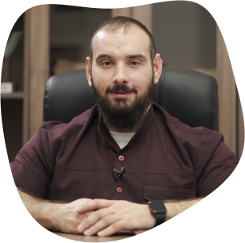

Лабунец Андрей Андреевич- руководитель центра. Врач реабилитолог, врач спортивной медицины, заведующий курсом Кинезотерапии кафедры Реабилитологии и спортивной медицины НАО "Медицинского унивеститета Астана". Автор собственной запатентованной методики "Медицинского фитнеса". Один из самых популярых и востребованных коучей в сфере ребилитации и спортивной медицины в РК. 1.

ОБ ОСНОВАТЕЛЕ
Меня зовут Лабунец Андрей, и большую часть своей жизни я посвятил медицине и спорту. Сейчас я - ярый сторонник здорового образа жизни и фитнеса, но не всегда было так…
Волей судеб, сложилось так, что в далеком прошлом я попал в жуткое ДТП и получил серьезные травмы. Когда я вышел из больницы, кроме последствий от повреждений моего тела, вдогонку я набрал лишних 20 килограмм. Сказались гиподинамия, иммобилизация (т.е. обездвиживание некоторых моих частей тела вообще) и добрая порция стресса и жалости к себе, которые обильно заедались.
